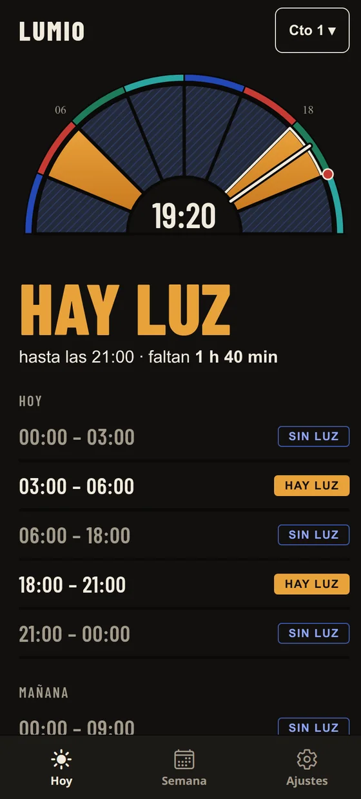
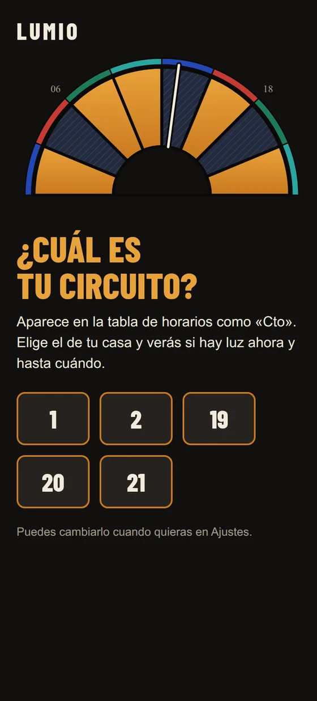

¿Hay luz
en casa?
Elige tu circuito y mira al instante si hay luz, hasta cuándo, y cuánto falta. Sin cuentas, sin anuncios y sin necesidad de internet.
Descargar para Android

Elige tu circuito y mira al instante si hay luz, hasta cuándo, y cuánto falta. Sin cuentas, sin anuncios y sin necesidad de internet.
Descargar para Android

Los horarios viven en tu teléfono. En pleno apagón y sin datos, Lumio responde igual.
Cuando tengas conexión baja los horarios nuevos, casi sin gastar datos, y te avisa si hay una versión nueva de la app.
Ponlo en la pantalla de inicio y mira si hay luz sin abrir la app.